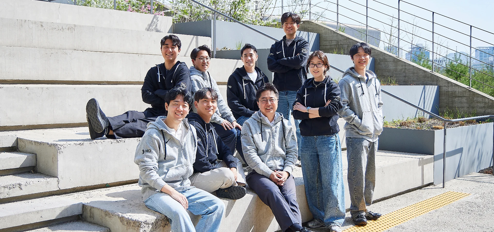
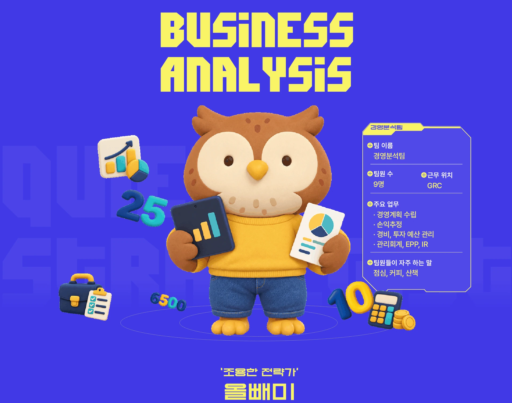
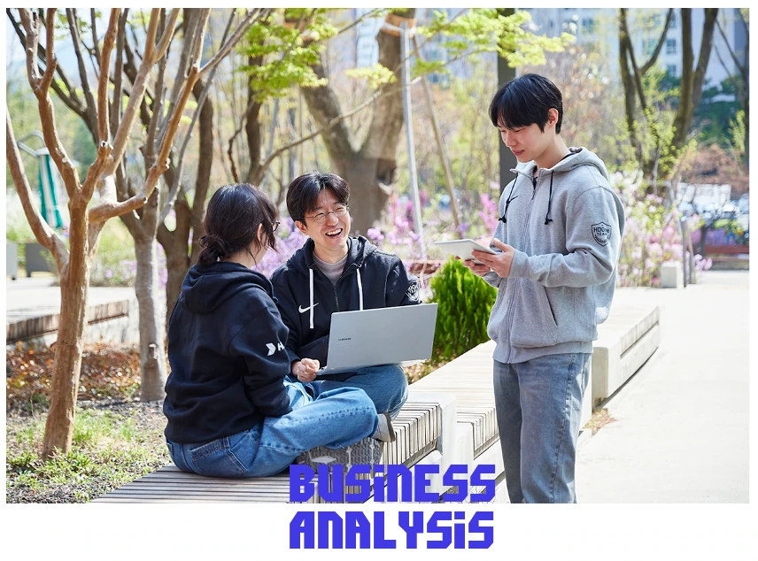
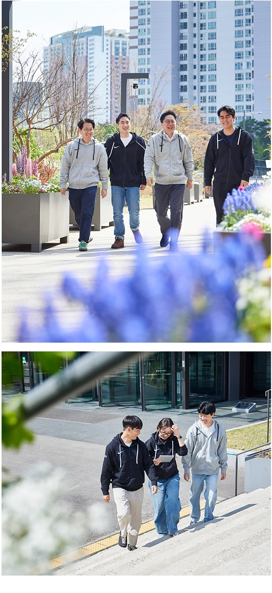
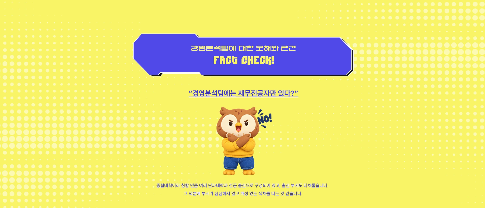
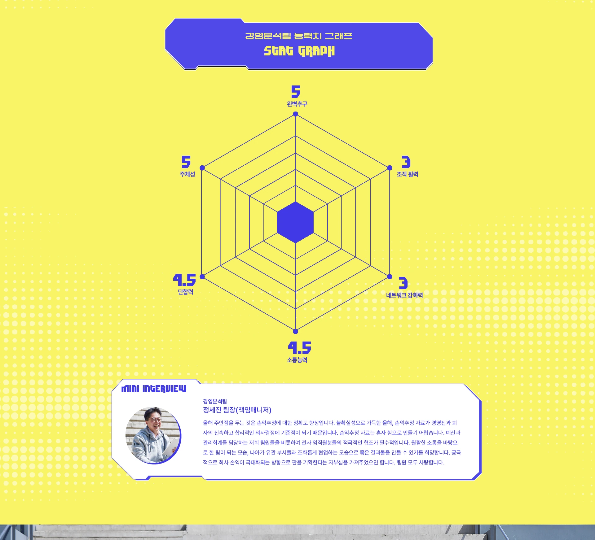
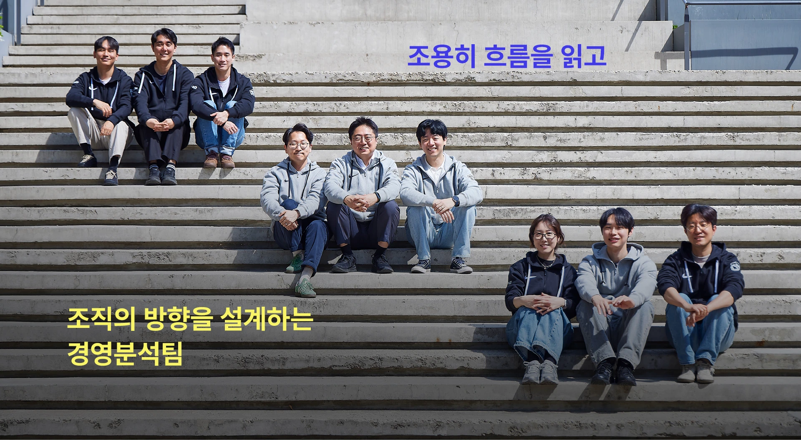

숫자 속에서 답을 찾고, 방향을 설계하다
경영분석팀
 AI 요약 | 경영분석팀 한눈에 보기
AI 요약 | 경영분석팀 한눈에 보기
LS일렉트릭 경영분석팀은 경영계획, 손익추정, 예산관리, 관리회계를 맡아 경영진의 의사결정에 필요한 재무 데이터를 만든다. 시장 변동이 큰 시기에는 유관 부서와 협업해 손익을 더 정확히 예측하는 데 힘쓴다. 기사는 숫자 속에서 회사의 방향을 읽는 팀의 모습을 올빼미에 빗대고, 구성원들의 인터뷰로 일하는 방식을 소개한다.
경영분석팀은 재무 분석을 통해 과거를 진단하고, 미래를 설계하는 부서이다. 국제 정세가 요동치는 지금, 경영분석팀이 만들어 낼 재무 데이터의 역할은 매우 중요하다. 회사의 손익을 극대화하기 위해 자료를 분석하고 예산을 관리하며 미래를 계획하고 있는 경영분석팀에 대해 알아보자.

경영분석팀은 불확실한 상황 속에서 수많은 재무 데이터를 분석해 현재를 진단하고 미래의 방향을 제시하는 역할을 합니다.
AI는 이러한 모습이 어둠 속에서도 사물을 정확히 꿰뚫어 보는 올빼미와 닮아 있다고 합니다.
넓은 시야로 전체적인 흐름을 읽고 중요한 순간에 핵심적인 판단을 내린다는 공통점도 있습니다.
‘조용한 전략가’인 올빼미와 경영분석팀, 닮은 것 같나요?조용히 흐름을 읽고 조직의 방향을 설계하는 팀, 경영분석팀입니다.


경영분석팀이 하는 일 & 회사 내에서의 역할
경영분석팀의 메인 업무는 경영계획, 손익추정, 예산관리, 관리회계입니다. 경영진의 의사결정에 근거가 되는 재무 데이터를 제작하고 있습니다. 대내외경제가 불확실성으로 가득한 지금, 회사의 방향성과 경영진의 의사결정에 중요한 기준점이 될 손익추정 자료를 준비하는 것이 현재로서 가장 중요한 업무입니다.
경영분석팀의 업무 강점은?
‘재무분석’이라는 공통점 하에 독립된 다양한 업무가 한 팀 안에 묶여 있어서, 다채로운 숫자를 유연하게 만들어 낼 수 있습니다.
경영분석팀이라면 꼭 갖춰야 할 능력은?
학습 의지가 중요합니다. 부서 특성상 다양한 재무 정보와 사업 기획을 접하고 직접 제작해야 할 일이 많습니다. 넘쳐나는 정보를 소화하고 그 흐름에 뒤처지지 않고 주도권을 잡으려면 부지런히 학습하는 의지가 필수적이라 할 수 있습니다. 아는 것이 많아질수록 성장의 기회도 그만큼 커집니다.
‘가장 뿌듯할 때’와 ‘가장 진땀이 날 때’는?
경영계획 수립을 끝냈을 때가 가장 뿌듯합니다. 경영계획에는 전사 차원의 협업과 수많은 고민, 분석, 결론이 녹아져 있는데요. 이 모든 것을 하나로 집대성해야 하기 때문에 끝냈을 때 성취감이 큽니다. 반면 변동성 심한 순간에 손익추정을 해야 할 때, 경영계획을 시시각각 수정해야 할 때는 진땀이 나곤 합니다.
팀워크를 유지하기 위해 중요하게 생각하는 부분은?
서로를 돌아보는 여유라고 봅니다. 업무 특성상 저마다 독립성이 강하지만, 기꺼이 나서서 서로 도움을 주면서 반전 감동과 유대감을 느끼고 있습니다.
경영분석팀의 평소 분위기는?
선은 지키되 벽이 없는 분위기입니다. 직급을 떠나 수평적이고 상호 존중하는 분위기 속에서 ‘일을 잘 해내자’는 일념으로 자유로운 토론과 대화를 추구합니다.

경영분석팀에는 재무전공자만 있다?
종합대학이라 칭할 만큼 여러 단과대학과 전공 출신으로 구성되어 있고, 출신 부서도 다채롭습니다. 그 덕분에 부서가 심심하지 않고 개성 있는 색채를 띠는 것 같습니다.

경영분석팀 정세진 팀장 미니 인터뷰
올해 주안점을 두는 것은 손익추정에 대한 정확도 향상입니다. 불확실성으로 가득한 올해, 손익추정 자료가 경영진과 회사의 신속하고 합리적인 의사결정에 기준점이 되기 때문입니다. 손익추정 자료는 혼자 힘으로 만들기 어렵습니다. 예산과 관리회계를 담당하는 저희 팀원들을 비롯하여 전사 임직원분들의 적극적인 협조가 필수적입니다. 원활한 소통을 바탕으로 한 팀이 되는 모습, 나아가 유관 부서들과 조화롭게 협업하는 모습으로 좋은 결과물을 만들 수 있기를 희망합니다. 궁극적으로 회사 손익이 극대화되는 방향으로 판을 기획한다는 자부심을 가져주었으면 합니다. 팀원 모두 사랑합니다.

이 이야기의 키워드
이번 이야기는 어떠셨나요?
6DISCOVER

구자균 회장, “AI 전력난 해법은 지능형 DC 배전”
아시아 첫 CIRED 기조연설에서 지능형 DC 플랫폼의 미래를 소개합니다.

LS ELECTRIC의 역사를 가장 빠르게 살펴보는 법
LS ELECTRIC의 기업사를 6분으로 정리한 영상입니다.

숫자 너머의 시장을 읽고, 가격을 설계하다
사업총괄)마케팅팀 가격·데이터 Part